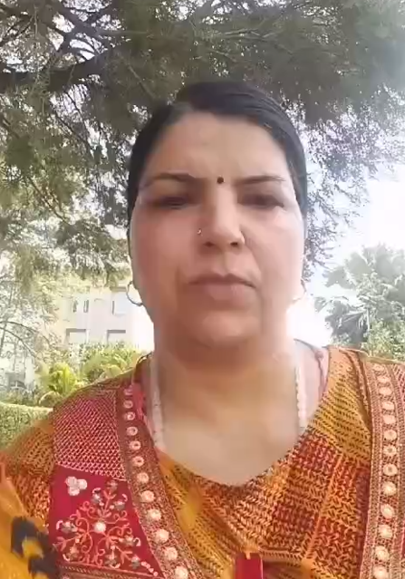
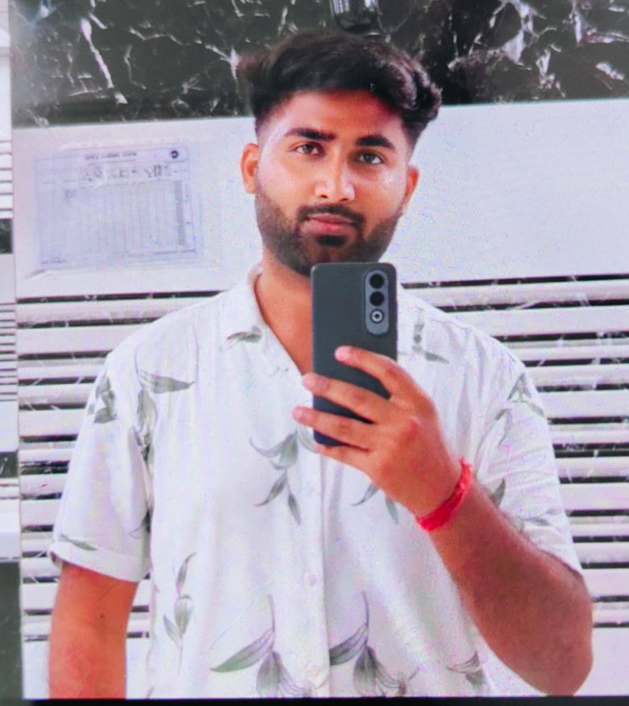

About
With over 15 years of experience in teaching, our educators have consistently demonstrated excellence, earning numerous awards for their commitment to student success. We believe in going beyond limits to unlock each student's full potential and maximize their performance in mathematics.
As a University Topper in Abstract Algebra and Discrete Mathematics, our lead instructor brings unparalleled expertise to the classroom, offering a deep understanding of complex mathematical concepts. Our research advisor guides students in the process of writing and publishing research papers, equipping them with valuable skills for academic growth.
We emphasize personalized learning by using tailored methods to make even the most intricate concepts easily accessible to students. This ensures that every student receives individual attention and is coached toward achieving measurable results. With a focus on building confidence, we work to remove the fear of mathematics and empower students to tackle challenges head-on.
Flexible timing and result-driven coaching ensure that students can learn at their own pace while achieving academic excellence. Whether you’re struggling with specific topics or looking to deepen your understanding, our approach guarantees a transformative learning experience that helps students succeed beyond expectations.
Learn MoreAs a faculty Dr. Neelam is a very good academician and specializes in mathematics. She was the best faculty of my campus. Students still remembered her for her teaching skills.
Dear Ma'am, I am writing to express my sincere appreciation for your exceptional guidance and support throughout my BTech studies, particularly in mathematics. Your expertise in the subject and your dedication to ensuring every student grasps the material have made a profound impact on my academic journey. Mathematics has always been a challenging subject for me but your patient and thorough explanations have transformed my understanding and confidence. Your approachability and willingness to clarify concepts, both in and out of class, have been instrumental in my academic success. Beyond teaching the curriculum, you have inspired me to approach problems analytically and to persevere through challenges. Your passion for mathematics is contagious, and it has motivated me to delve deeper into the subject matter. I am truly grateful for the time and effort you invest in your students. Your commitment to our learning and your ability to make complex topics understandable have not only helped me excel academically but have also fostered a genuine interest in mathematics. Thank you once again, Ma'am, for being an exceptional educator and mentor. Your influence will undoubtedly stay with me throughout my career.

Dear Dr. Tyagi Ma'am, You are a great person to work with and I truly appreciate the time and effort you put into doing an excellent job. I'm continually impressed by how you're able to inspire everyone on the team to do their best. I am so grateful to work with you every day. Your continued support and all of the help you provided on our project was invaluable. It truly means so much. If everyone had coworkers as great as you, no one would ever complain about work again. I appreciate your team spirit and enthusiasm every day. Thanks for all you do.

Dear Neelam Tyagi, your unwavering dedication, kindness, and passion for teaching have deeply impacted my life, creating a classroom filled with love and learning. Thank you for being not just a teacher, but a mentor and friend; your efforts are truly cherished.

Dear Dr. Tyagi Ma'am, You are a great person to work with and I truly appreciate the time and effort you put into doing an excellent job. I'm continually impressed by how you're able to inspire everyone on the team to do their best. I am so grateful to work with you every day. Your continued support and all of the help you provided on our project was invaluable. It truly means so much. If everyone had coworkers as great as you, no one would ever complain about work again. I appreciate your team spirit and enthusiasm every day. Thanks for all you do.
Dear Dr. Tyagi Ma'am, You are a great person to work with and I truly appreciate the time and effort you put into doing an excellent job. I'm continually impressed by how you're able to inspire everyone on the team to do their best. I am so grateful to work with you every day. Your continued support and all of the help you provided on our project was invaluable. It truly means so much. If everyone had coworkers as great as you, no one would ever complain about work again. I appreciate your team spirit and enthusiasm every day. Thanks for all you do.
Dear Neelam Tyagi, your unwavering dedication, kindness, and passion for teaching have deeply impacted my life, creating a classroom filled with love and learning. Thank you for being not just a teacher, but a mentor and friend; your efforts are truly cherished.

During my Bachelor's, I had the privilege of being taught by an exceptional mathematics professor that is Dr. Neelam Tyagi ma'am.Not only were you a remarkable educator, but also a great mentor and a wonderful person. Your ability to make complex concepts understandable was truly incredible. You had a unique talent for breaking down difficult topics into manageable pieces, making learning both enjoyable and accessible. Your guidance and support extended beyond the classroom, as you were always available to offer advice and encouragement. Your dedication and passion for teaching left a lasting impact on my academic journey and personal growth. I am deeply grateful for your mentorship and the profound influence you had on my education.
"Hello Ma'am, How are you doing During my time as Dr. Neelam Tyagi's student, I was consistently impressed by her teaching prowess and dedication. She possesses a rare ability to simplify complex mathematical concepts without compromising on depth. Her patience and willingness to ensure every student understood the material were commendable. Thanks to her guidance, I not only improved my grades but also developed a deeper appreciation for mathematics."
"Hi, It is with great pleasure that I write this testimonial for Neelam Tyagi mam. I had the privilege of being her student during my first semester at Uttarakhand Technical University, where she taught me M1 Mathematics. She is an excellent professor and mentor. Beyond academics, Professor Neelam Tyagi exhibited genuine concern for her students' well-being. She created a welcoming atmosphere in the classroom, fostering open discussions and collaborative learning. Her mentorship extended beyond the classroom, as she provided valuable advice on academic planning and career choices. In conclusion, I want to express my gratitude to you for your continued mentorship and extend my best wishes for your new chapter."
"My childhood tutor's teaching ability is exemplary. She possesses a rare gift for simplifying complex subjects, making learning enjoyable and accessible. Her patient demeanor and personalized approach catered to my learning style, nurturing both my academic understanding and confidence. Her passion for education was infectious, instilling in me a lifelong thirst for knowledge. I credit much of my academic success to her exceptional teaching skills."
"During the academic time ur contribution I'll not forget whole of my life that u supported me not as a student but a family member when I was ill and learning from u mathematics made much Sharpe after that, n got also 99 in mathematics in semester. In my college career u are the best ma'am I ever met."
Walhekar Wadi, Pune-411033
+91 9766651903
www.drneelamacademy.in
drneelamacademy123@gmail.com